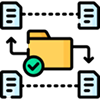
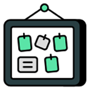
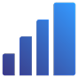

Trabajo centralizado
Cada proyecto agrupa sus tableros, tareas y miembros para que el equipo no mezcle pendientes entre iniciativas.
Organiza cada iniciativa con su tablero, tareas, responsables, fechas objetivo, estado y chat propio.


Cada proyecto agrupa sus tableros, tareas y miembros para que el equipo no mezcle pendientes entre iniciativas.

Consulta tareas pendientes, en proceso, completadas y porcentaje de progreso desde una sola vista.
Asocia usuarios al proyecto, reparte responsabilidades y usa el chat integrado para resolver decisiones del trabajo.
Crea el proyecto con nombre, descripción, color y fecha objetivo.
Agrega tableros y tareas para ordenar el trabajo por etapas.
Asigna responsables y revisa el progreso en tiempo real.
Archiva proyectos terminados sin perder su historial de tareas, miembros y conversaciones.
Convierte cada idea en un espacio de trabajo claro y medible.